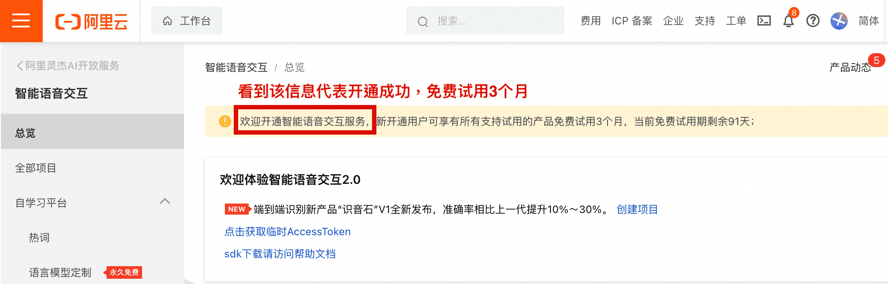
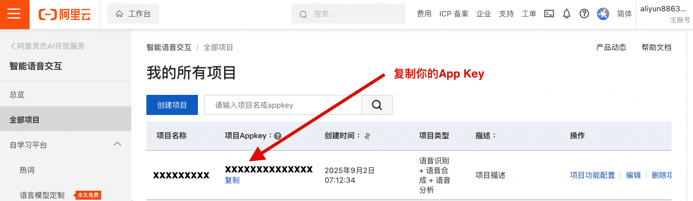
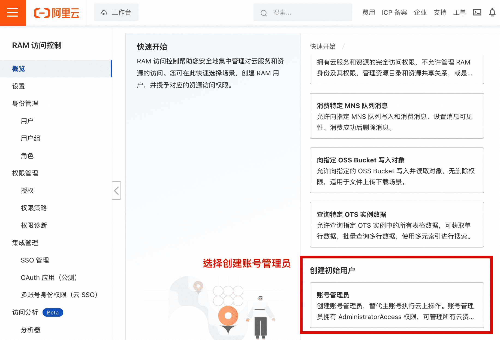
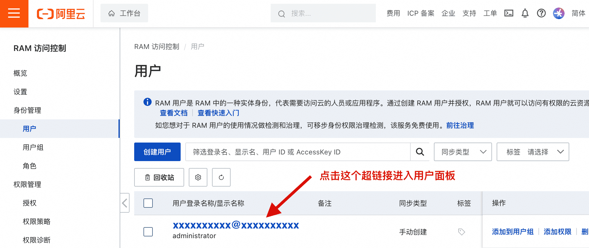
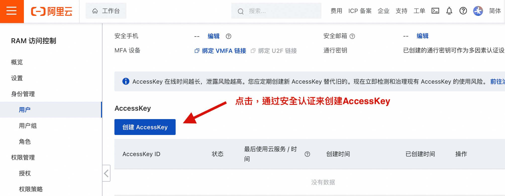
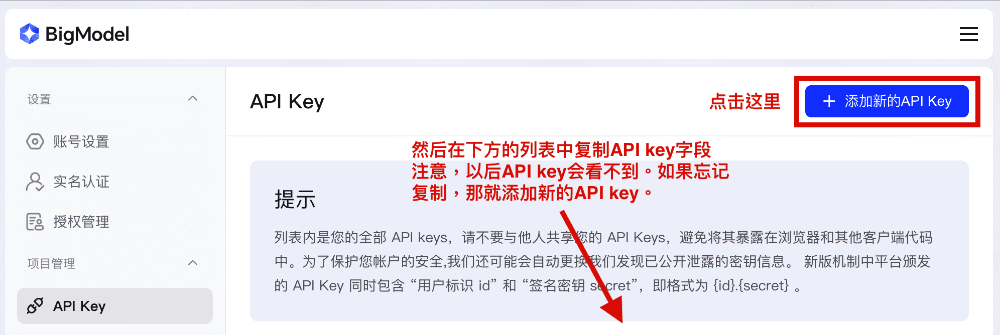

1
开通智能语音服务

2
获取并配置 AppKey

创建项目。获取项目当中的AppKey。
操作步骤：
1. 前往全部项目页面
2. 创建一个新项目，然后在列表中找到它
3. 点击项目名称进入项目详情
4. 在项目详情页面找到并复制AppKey
5. 将AppKey粘贴到下方输入框中
操作步骤：
1. 前往全部项目页面
2. 创建一个新项目，然后在列表中找到它
3. 点击项目名称进入项目详情
4. 在项目详情页面找到并复制AppKey
5. 将AppKey粘贴到下方输入框中
3
创建RAM用户

4
创建AccessKey


为刚才创建的RAM用户创建AccessKey，用于API身份验证。
创建AccessKey步骤：
1. 前往用户管理页面
2. 点击刚刚创建的用户
3. 往下划，找到"Access Key"板块
4. 点击"创建AccessKey" → 选择"本地开发环境中使用"
5. 通过安全认证完成AccessKey创建
创建AccessKey步骤：
1. 前往用户管理页面
2. 点击刚刚创建的用户
3. 往下划，找到"Access Key"板块
4. 点击"创建AccessKey" → 选择"本地开发环境中使用"
5. 通过安全认证完成AccessKey创建
5
语音录制测试
6
智谱API配置

配置智谱AI API，实现语音转文本的智能分析处理。
获取智谱AI API Key步骤：
1. 前往 智谱AI控制台
2. 点击"添加新的API Key"，选择一个名称
3. 在下方列表中复制生成的API Key
获取智谱AI API Key步骤：
1. 前往 智谱AI控制台
2. 点击"添加新的API Key"，选择一个名称
3. 在下方列表中复制生成的API Key